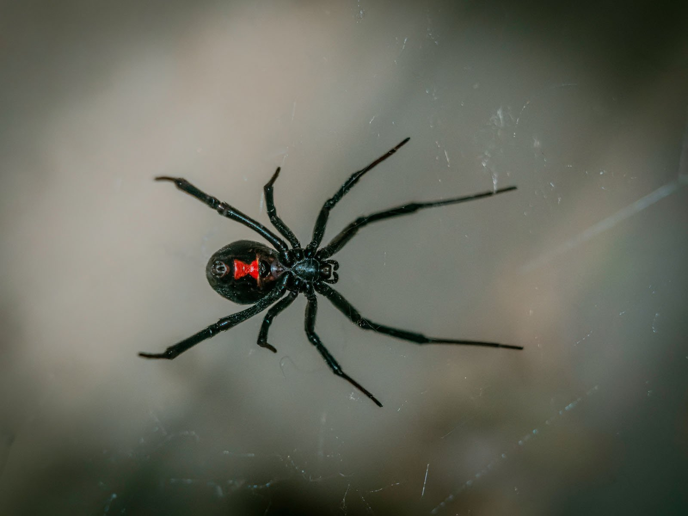
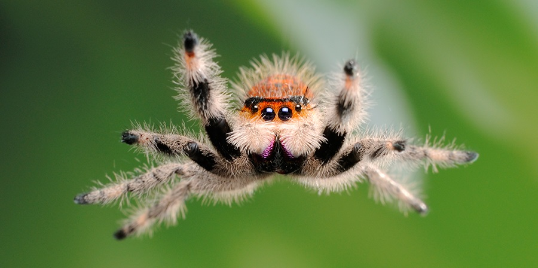

Spiders are fascinating creatures that are found all over the world. They are known for their ability to spin webs and catch prey.
Without spiders, we wouldn't have the natural control of insect populations, which is how ecosystems maintain balance. Spiders are also important for the environment because they help to break down dead plants and animals, which helps to keep the soil healthy.

The black widow is a venomous spider that is found in North America. It is known for its distinctive black color and red hourglass shape on its abdomen.

Jumping spiders are a family of spiders that are known for their ability to jump long distances. They are found all over the world and come in a variety of colors and patterns.
Trapdoor spiders are a family of spiders that are known for their ability to create burrows with trapdoors. They are found in various habitats around the world.